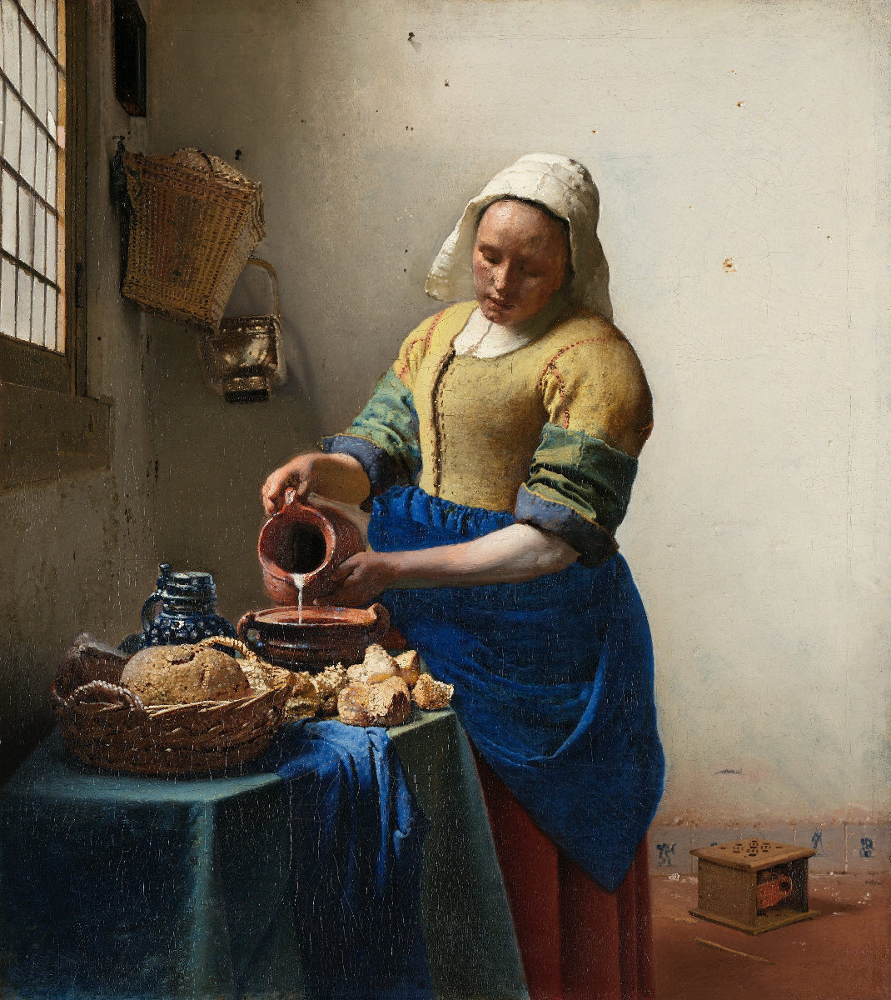

l’opera rappresenta una stanza umile e spoglia in cui una donna sta versando il latte in una brocca.
Sul pavimento è posato uno scaldino, sul tavolo sono disposti vari oggetti, mentre la luce proviene dalla finestra che si intravede a sinistra.
Il soggetto di questo dipinto non è la donna ma il gesto che compie, ovvero l’atto di versare il latte. Un’azione semplice e banale ma descritta con poesia.
Ogni dettaglio è rappresentato con precisione.
Il cestino e i pezzi di pane, il panno azzurro, il vaso e il recipiente in terracotta, le piastrelle di ceramica e le
Torna alla pagina precedente